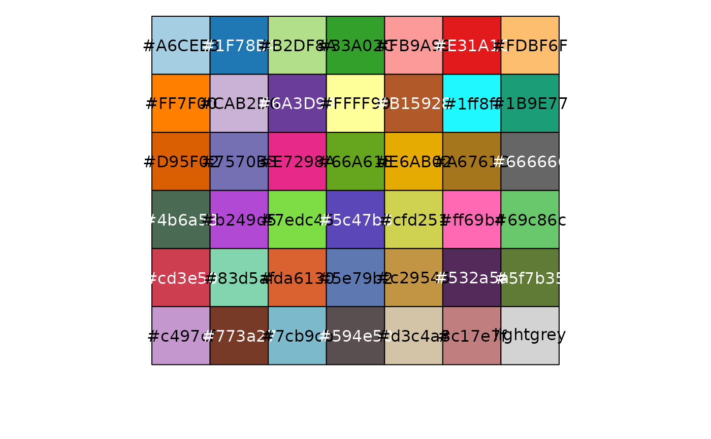

Available palettes (max colors) are "brewerPlus" (41), "kelly" (20) and "greenArmytage" (25).
"brewerPlus" is an arbitrary expansion of the "Paired" and "Dark2" colorbrewer palettes. The philosophy behind this expansion was to ensure that similar colours are far apart, and the earlier colours are attractive.
"kelly" is based on the 22-colour palette developed by Kenneth Kelly but with white and black starting colours removed. This palette is ordered such that the first colours are most distinct.
"greenArmytage" is based on a 26-colour palette proposed by Paul Green-Armytage, with black removed. This palette is not ordered by maximum contrast.
distinct_palette(n = NA, pal = "brewerPlus", add = "lightgrey")
Arguments
| n | number of colours to return |
|---|---|
| pal | palette name, one of "brewerPlus", "kelly", "greenArmytage" |
| add | colour to append to end of palette, as colour n+1, lightgrey by default for the use as "other" taxa in comp_barplot, or NA for no additional colour. |
Value
vector of colours
Details
Hex color codes for 'kelly' and 'greenArmytage' palettes are copied and slightly modified from the Polychrome R package: i.e. Polychrome::kelly.colors() and Polychrome::green.armytage.colors()
Please consider also citing Coombes 2019 doi: 10.18637/jss.v090.c01 if you use either of these palettes.
See the Polychrome reference manual for more information: https://CRAN.R-project.org/package=Polychrome
Examples
brewerPlus <- distinct_palette() scales::show_col(brewerPlus)  kelly <- distinct_palette(pal = "kelly") scales::show_col(kelly)greenArmytage <- distinct_palette(pal = "greenArmytage") scales::show_col(greenArmytage)